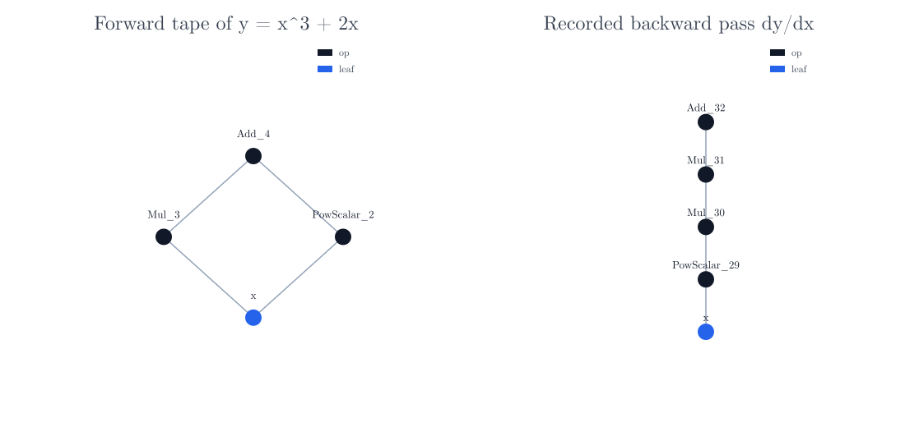
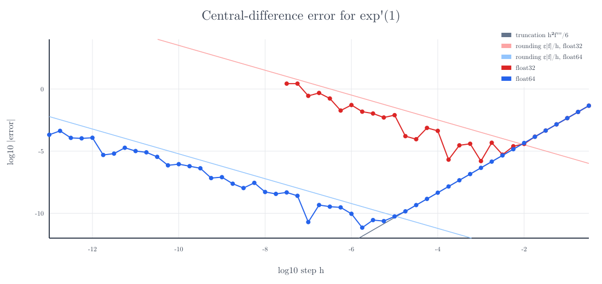
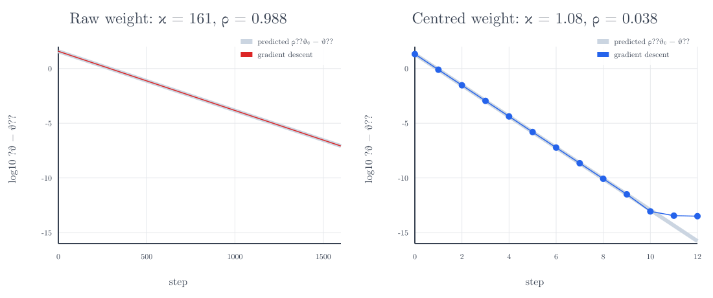

Automatic Differentiation: Gradients from a Recorded Tape
Abstract
Training a neural network needs the gradient of a scalar loss with respect to many parameters,
to rounding error, at a small multiple of the cost of computing the loss. Finite differences
fail on both counts: they cost one or two evaluations per parameter, and they lose about a third
of the available digits. Reverse-mode automatic differentiation meets both needs. This report
derives it from the chain rule, as a backward sweep over a tape of the operations the forward
computation recorded. It then derives vector-Jacobian and Jacobian-vector products, higher
derivatives obtained by recording the backward sweep itself, and the step-size trade-off of
central differences. On \(y=x^3+2x\) at \(x=2\) the tape has three operations, and the adjoints of its
values are 1, 1, 1 and 14, as hand-worked. The third derivative is 6 at every point. The Jacobian of a three-output
function matches its hand form to six decimals, and stop_gradient halves \(\mathrm d(s\cdot s)/\mathrm ds\) from 6 to 3.
Central differences of \(\exp'(1)\) reach at best an error of \(7\times10^{-12}\) in float64 and \(2\times10^{-6}\) in float32, at steps
near the predicted \(h^*=(3\varepsilon)^{1/3}\). Autograd is exact in float64 and in error by \(8\times10^{-8}\) in float32. A gradient cost between
about 1.7 and 3.5 function evaluations for \(10^2\) to \(10^6\) inputs. On the mtcars data, gradient descent on the least-squares loss
converges at exactly the rate \((\kappa-1)/(\kappa+1)\) predicted by the Hessian, which autograd also supplies. That rate is 0.988 with the raw weight and
0.038 once the weight is centred, so the fit takes 1401 steps in one case and 6 in the other. The library gained
nn::tape and nn::plot_tape, to inspect and draw the recorded graph, and nn::vjp, nn::jvp,
nn::jacobian, nn::hessian and nn::hvp.
The problem
A model with parameters \(\theta\in\mathbb R^n\) is trained by moving \(\theta\) against the gradient \(\nabla L(\theta)\) of a scalar loss. Modern networks have \(n\) in the millions, and the gradient is needed at every step. Writing derivatives by hand does not scale and is error-prone. Symbolic differentiation produces expressions that grow quickly with the depth of the computation. Finite differences need about \(n\) evaluations of \(L\) for one gradient, and they are inaccurate. Automatic differentiation (AD) computes exact derivatives of the program that computes \(L\), at a cost proportional to the cost of \(L\) itself.
This report covers the reverse mode of AD as datamunge's nn library implements it. It replaces
the original example examples/nn/0_foundations/0.1_tensors_graphs_sessions/autodiff.cpp, a port of
TensorFlow's AddSymbolicGradients. In TensorFlow 1 a graph was built first and gradients were added to it as more
graph nodes. In nn, as in PyTorch, each operation records itself on a tape as it runs (define-by-run), and
nn::grad walks the tape backwards. There are no placeholders or sessions: inputs are function
arguments, and variables are leaf tensors created with requires_grad_().
The method
The chain rule on a computational graph
Any program that computes \(y=f(x)\) from elementary operations can be written as a sequence of intermediate values \(v_1,\dots,v_N\), where each \(v_k=\phi_k(v_{a(k)})\) applies an elementary function \(\phi_k\) to earlier values \(v_{a(k)}\). The inputs are the first values and the output is the last. For \(y=x^3+2x\):
The values and their dependencies form a directed acyclic graph. The chain rule expresses the derivative of the output with respect to any value as a sum over the values that use it. Define the adjoint \(\bar v_k=\partial y/\partial v_k\). Then
since \(v_j\) can affect \(y\) only through the values computed from it. A value's adjoint depends only on the adjoints of later values, so one sweep in reverse order of computation finds all of them. For the example, \(\bar v_4=1\), \(\bar v_2=\bar v_4\cdot1=1\), \(\bar v_3=\bar v_4\cdot1=1\), and \(\bar v_1=\bar v_2\cdot3v_1^2+\bar v_3\cdot2=3x^2+2\), which is 14 at \(x=2\).
Each operation therefore needs one backward function: given the adjoint of its output, it returns the adjoints contributed to its inputs, using values saved during the forward pass (here \(v_1\), for \(3v_1^2\)). That is what the tape stores. Each node records the operation, edges to the nodes that produced its inputs, and a closure for its backward function. A leaf tensor that requires a gradient ends in an accumulator node, and an input that needs no gradient (a constant) has no edge.
Vector-Jacobian and Jacobian-vector products
For \(f:\mathbb R^n\to\mathbb R^m\) with Jacobian \(J=\partial f/\partial x\in\mathbb R^{m\times n}\), start the sweep from a cotangent \(\bar y=v\in\mathbb R^m\) instead of 1. By linearity every adjoint is then \(v^\top\partial y/\partial v_j\), and the input adjoint is
One backward pass gives one vector-Jacobian product (VJP), at a cost of a small constant times the cost of \(f\). The gradient of a scalar loss is the case \(m=1\), \(v=1\). The full Jacobian takes \(m\) passes, one per output, with one-hot seeds \(v=e_i\) that pick out row \(i\).
The forward mode carries a tangent \(\dot v_k=\sum_j(\partial\phi_k/\partial v_j)\dot v_j\) alongside each value instead, and yields the Jacobian-vector product (JVP) \(Ju\) in one forward pass. A tape built for the reverse mode can give \(Ju\) too. The map \(g(v)=J^\top v\) is linear in \(v\), so
Recording the first backward pass as a function of a dummy \(v\), then differentiating it once more, gives the JVP from two reverse sweeps (the "double-backward trick"). Reverse mode suits \(m\ll n\), which is the training case. Forward mode suits \(n\ll m\), for example a sensitivity to one parameter.
The cost of a gradient
Each backward function costs at most a fixed multiple of its forward operation: for \(c=ab\), the two adjoints \(\bar a=\bar c\,b\) and \(\bar b=\bar c\,a\) cost two multiplications against one. Summing over the tape gives the cheap-gradient principle (Baur and Strassen, 1983; Griewank and Walther, 2008):
independent of the number of inputs. The price is memory. Every saved forward value is kept until the backward sweep has used it.
Higher derivatives
The backward sweep is itself a computation built from differentiable operations, such as \(3v_1^2\cdot\bar v_2\). If it
is recorded on the tape (create_graph), the gradient it produces is a tensor with a history, and
nn::grad can differentiate it again. The Hessian \(\nabla^2f\) of a scalar \(f\) is the Jacobian of \(\nabla f\), at \(n\) reverse
sweeps over the recorded gradient. The Hessian-vector product needs one:
which holds because \(v\) does not depend on \(x\) (Pearlmutter, 1994). It costs about twice a gradient, without forming the \(n\times n\) matrix.
Stopping a gradient
stop_gradient(x) returns the value of \(x\) with no history. The tape treats it as a constant, so
\(\partial\,\mathrm{stop}(x)/\partial x=0\) by fiat. For \(z=s\cdot\mathrm{stop}(s)\) the derivative is \(\mathrm{stop}(s)=s\), not \(2s\). This is used for targets that
must not be trained through, as in temporal-difference learning, for straight-through estimators, and
to cut a graph that would otherwise grow without bound.
Finite differences and why they are only a check
The central difference \(D_h=\bigl(f(x+h)-f(x-h)\bigr)/2h\) has, by Taylor's theorem, truncation error \(h^2f'''(\xi)/6\). In floating point each evaluation of \(f\) carries a relative error of order \(\varepsilon\), the machine epsilon, and the difference of two such values divided by \(2h\) carries an error of order \(\varepsilon\lvert f\rvert/h\). The total error is bounded by
from setting \(E'(h)=0\). The best achievable error is of order \(\varepsilon^{2/3}\), so about a third of the digits are lost.
Steps smaller than \(h^*\) make matters worse, not better. Reverse-mode AD has no step and loses only
the rounding of the operations themselves. Finite differences remain useful as an independent check on
backward functions, which is what nn::gradcheck does in float64.
In the library
The operations in datamunge::nn record themselves when any input requires gradients. The calls used here are:
nn::grad(outputs, inputs, seeds, options)returns the VJPs \(\sum_i J_i^\top v_i\) without touchingTensor::grad(). Its optionsretain_graphandcreate_graphkeep the tape for another sweep and record the sweep. Inputs may be intermediate tensors, which gives the adjoints of any value on the tape.nn::tape(outputs, names)(new) returns the recorded graph as plain data, in reverse recording order. It can be printed withto_text(), exported withto_dot(), or drawn withnn::plot_tape()(new).nn::vjp,nn::jvp,nn::jacobian,nn::hessianandnn::hvp(new, innn/derivatives.hpp) take a function of one tensor. JVP uses the double-backward trick above, and the Hessian is the Jacobian of the recorded gradient.nn::stop_gradient,nn::NoGradGuard(no recording inside a scope), andnn::gradcheck/nn::gradgradcheck(first and second derivatives against central differences).
Simple examples
One scalar function, by hand and on the tape
The first program records \(y=x^3+2x\) at \(x=2\), prints the tape and the adjoints of every value, then
differentiates three times. The gradient is recorded each time (create_graph), so it can be differentiated again.
#include <dm/dm.hpp>
namespace nn = dm::nn;
int main() {
std::filesystem::create_directories("build");
// y = x^3 + 2x at x = 2, with the two intermediate results kept.
auto x = nn::scalar(2.0, nn::DType::Float64).requires_grad_();
auto u = nn::pow(x, 3.0);
auto v = 2.0 * x;
auto y = u + v;
const auto t = nn::tape({y}, {{x, "x"}});
std::print("{}\n", t.to_markdown());
// Adjoints: dy/d(node) for every value on the tape.
const auto adj = nn::grad(y, {y, u, v, x}, {.retain_graph = true});
std::print("| value | forward | adjoint dy/d(value) |\n| :--- | ---: | ---: |\n");
const char* names[] = {"y = u + v", "u = x^3", "v = 2 x", "x"};
const nn::Tensor vals[] = {y, u, v, x};
for (int i = 0; i < 4; ++i) std::print("| {} | {:.0f} | {:.0f} |\n", names[i], vals[i].item(), adj[i].item());
// Derivatives of the derivative: the backward pass recorded with create_graph.
std::print("\n| x | y | dy/dx | expected 3x^2+2 | d2y/dx2 | expected 6x | d3y/dx3 |\n| ---: | ---: | ---: | ---: | ---: | ---: | ---: |\n");
nn::Tape backward_tape;
for (double xv : {0.5, 1.0, 2.0}) {
auto xx = nn::scalar(xv, nn::DType::Float64).requires_grad_();
auto yy = nn::pow(xx, 3.0) + 2.0 * xx;
auto d1 = nn::grad(yy, {xx}, {.create_graph = true})[0];
auto d2 = nn::grad(d1, {xx}, {.create_graph = true})[0];
auto d3 = nn::grad(d2, {xx})[0];
if (xv == 2.0) backward_tape = nn::tape({d1}, {{xx, "x"}});
std::print("| {:.1f} | {:.3f} | {:.3f} | {:.3f} | {:.3f} | {:.3f} | {:.3f} |\n", xv, yy.item(), d1.item(),
3 * xv * xv + 2, d2.item(), 6 * xv, d3.item());
}
std::print("\nThe recorded backward pass (dy/dx as a function of x) has {} ops:\n\n{}\n",
backward_tape.op_count(), backward_tape.to_markdown());
auto fig = dm::graphics::RLayout::create(1, 2);
fig.add(nn::plot_tape(t, "Forward tape of y = x^3 + 2x"));
fig.add(nn::plot_tape(backward_tape, "Recorded backward pass dy/dx"));
fig.size(1100, 520).fit_panels();
fig.save_svg("build/autodiff_tape.svg");
}| Node | Operation | Shape | Inputs |
|---|---|---|---|
| Add_4 | Add | [] | PowScalar_2, Mul_3 |
| Mul_3 | Mul | [] | const, x |
| PowScalar_2 | PowScalar | [] | x |
| x | Leaf | [] |
| value | forward | adjoint dy/d(value) |
|---|---|---|
| y = u + v | 12 | 1 |
| u = x^3 | 8 | 1 |
| v = 2 x | 4 | 1 |
| x | 2 | 14 |
| x | y | dy/dx | expected 3x^2+2 | d2y/dx2 | expected 6x | d3y/dx3 |
|---|---|---|---|---|---|---|
| 0.5 | 1.125 | 2.750 | 2.750 | 3.000 | 3.000 | 6.000 |
| 1.0 | 3.000 | 5.000 | 5.000 | 6.000 | 6.000 | 6.000 |
| 2.0 | 12.000 | 14.000 | 14.000 | 12.000 | 12.000 | 6.000 |
The recorded backward pass (dy/dx as a function of x) has 4 ops:
| Node | Operation | Shape | Inputs |
|---|---|---|---|
| Add_32 | Add | [] | const, Mul_31 |
| Mul_31 | Mul | [] | const, Mul_30 |
| Mul_30 | Mul | [] | PowScalar_29, const |
| PowScalar_29 | PowScalar | [] | x |
| x | Leaf | [] |

The tape has three operations and one leaf, with the output's node first. Mul_3 <- const x shows that the
factor 2 entered as a constant with no edge. The adjoints match the hand sweep of the method section:
\(\bar y=\bar u=\bar v=1\), because addition passes its adjoint through unchanged, and \(\bar x=3x^2+2=14\). The first and second
derivatives match \(3x^2+2\) and \(6x\) at all three points, and the third derivative is 6 everywhere. The
right-hand tape shows what create_graph records. The backward function of \(x^3\) becomes the operations
\(x^2\) (PowScalar), times the incoming adjoint 1 (Mul_30), times 3 (Mul_31). The backward function of \(2x\)
contributes the constant 2, added by Add_32. That chain is the expression \(3x^2+2\), now differentiable in turn.
A Jacobian, its products, and a stopped gradient
For \(f(x)=(x_0x_1,\;x_0+x_1,\;\sin x_0)\) at \(x=(2,3)\), the Jacobian by hand is
#include <dm/dm.hpp>
namespace nn = dm::nn;
using nn::Tensor;
int main() {
const auto F64 = nn::DType::Float64;
// f(x) = [x0 x1, x0 + x1, sin x0] at x = (2, 3).
const auto f = [](const Tensor& x) {
const Tensor x0 = nn::select(x, 0, 0), x1 = nn::select(x, 0, 1);
return nn::stack({x0 * x1, x0 + x1, nn::sin(x0)});
};
const Tensor x = nn::tensor({2, 3}, {2}, F64);
const auto J = nn::jacobian(f, x).to_vector<double>();
std::print("| output | df/dx0 | df/dx1 | by hand |\n| :--- | ---: | ---: | :--- |\n");
const char* rows[] = {"x0 x1", "x0 + x1", "sin x0"};
const char* hand[] = {"(x1, x0) = (3, 2)", "(1, 1)", "(cos 2, 0)"};
for (int i = 0; i < 3; ++i) std::print("| {} | {:.6f} | {:.6f} | {} |\n", rows[i], J[2 * i], J[2 * i + 1], hand[i]);
std::print("\ncos 2 = {:.6f}\n\n", std::cos(2.0));
const Tensor v = nn::tensor({1, -1, 2}, {3}, F64), u = nn::tensor({1, 1}, {2}, F64);
std::print("- v = (1, -1, 2): vjp gives vᵀJ = {}\n", nn::vjp(f, x, v).values_str());
std::print("- u = (1, 1): jvp gives Ju = {}\n", nn::jvp(f, x, u).values_str());
// stop_gradient: the second factor is frozen.
auto s = nn::scalar(3.0, F64).requires_grad_();
std::print("- d(s·stop(s))/ds at 3 = {:.0f}; d(s·s)/ds at 3 = {:.0f}\n",
nn::grad(s * nn::stop_gradient(s), {s})[0].item(), nn::grad(s * s, {s})[0].item());
const auto ts = nn::tape({s * nn::stop_gradient(s)}, {{s, "s"}});
std::print("\n{}\n", ts.to_markdown());
}| output | df/dx0 | df/dx1 | by hand |
|---|---|---|---|
| x0 x1 | 3.000000 | 2.000000 | (x1, x0) = (3, 2) |
| x0 + x1 | 1.000000 | 1.000000 | (1, 1) |
| sin x0 | -0.416147 | 0.000000 | (cos 2, 0) |
cos 2 = -0.416147
- v = (1, -1, 2): vjp gives vᵀJ = [1.16771, 1]
- u = (1, 1): jvp gives Ju = [5, 2, -0.416147]
- d(s·stop(s))/ds at 3 = 3; d(s·s)/ds at 3 = 6
| Node | Operation | Shape | Inputs |
|---|---|---|---|
| Mul_60 | Mul | [] | s, const |
| s | Leaf | [] |
The three one-hot backward passes reproduce \(J\) row by row. With \(v=(1,-1,2)\), \(v^\top J=(3-1+2\cos2,\;2-1+0)=(1.16771,\;1)\).
With \(u=(1,1)\), \(Ju=(3+2,\;1+1,\;\cos2)=(5,\;2,\;-0.416147)\), from two reverse sweeps and no forward-mode code. The stopped
product has derivative 3 against 6 for \(s\cdot s\), and its tape shows why: the multiplication's second input is
const, so only one edge leads back to \(s\).
Checking the theory
The finite-difference trade-off
The program below takes central differences of \(f=\exp\) at \(x=1\), where \(f=f'''=e\), for steps \(h\) from \(10^{-13}\) to \(10^{-0.5}\). It works in float32 (\(\varepsilon=1.19\times10^{-7}\)) and float64 (\(\varepsilon=2.22\times10^{-16}\)). With \(f=f'''\), the predicted best step is \(h^*=(3\varepsilon)^{1/3}\) and the bound at that step is \(1.04\,\varepsilon^{2/3}e\). The step actually taken is the difference of the two rounded arguments, so the rounding of \(1\pm h\) itself does not count as error.
#include <dm/dm.hpp>
namespace nn = dm::nn;
using nn::Tensor;
int main() {
std::filesystem::create_directories("build");
const auto F32 = nn::DType::Float32, F64 = nn::DType::Float64;
// Central differences of exp at x = 1 in both precisions, against autograd.
const double e = std::exp(1.0);
auto fd = [&](double h, nn::DType dt) {
nn::NoGradGuard guard;
const double up = nn::exp(nn::scalar(1.0 + h, dt)).item(), dn = nn::exp(nn::scalar(1.0 - h, dt)).item();
// The step actually taken is the difference of the rounded arguments.
const double hp = nn::scalar(1.0 + h, dt).item() - nn::scalar(1.0 - h, dt).item();
return hp == 0.0 ? std::numeric_limits<double>::quiet_NaN() : std::abs((up - dn) / hp - e);
};
std::vector<double> lh, l32, e32, e64;
for (double k = -13.0; k <= -0.5; k += 0.25) {
const double h = std::pow(10.0, k);
const double a = fd(h, F32), b = fd(h, F64);
lh.push_back(k);
if (!std::isnan(a)) { // else the float32 arguments 1 +- h round to the same number
l32.push_back(k);
e32.push_back(std::log10(std::max(a, 1e-17)));
}
e64.push_back(std::log10(std::max(b, 1e-17)));
}
auto best = [&](const std::vector<double>& hs, const std::vector<double>& err) {
const auto i = std::min_element(err.begin(), err.end()) - err.begin();
return std::pair{hs[i], err[i]};
};
const auto [h32, b32] = best(l32, e32);
const auto [h64, b64] = best(lh, e64);
const double eps32 = std::numeric_limits<float>::epsilon(), eps64 = std::numeric_limits<double>::epsilon();
auto hstar = [&](double eps) { return std::cbrt(3 * eps); }; // f = f''' = e
auto estar = [&](double eps) { return 1.5 * std::pow(eps * e, 2.0 / 3.0) * std::cbrt(e / 3.0); };
std::print("| precision | eps | best h (grid) | best error | predicted h* | predicted error |\n");
std::print("| :--- | ---: | ---: | ---: | ---: | ---: |\n");
std::print("| float32 | {:.2e} | {:.1e} | {:.1e} | {:.1e} | {:.1e} |\n", eps32, std::pow(10, h32), std::pow(10, b32), hstar(eps32), estar(eps32));
std::print("| float64 | {:.2e} | {:.1e} | {:.1e} | {:.1e} | {:.1e} |\n", eps64, std::pow(10, h64), std::pow(10, b64), hstar(eps64), estar(eps64));
for (auto dt : {F32, F64}) {
auto x = nn::scalar(1.0, dt).requires_grad_();
const double g = nn::grad(nn::exp(x), {x})[0].item();
std::print("\n- autograd derivative in {}: error {:.1e}", dt == F32 ? "float32" : "float64", std::abs(g - e));
}
std::print("\n\n");
// Reference lines log10 E = a + s log10 h, clipped to the plotting window.
const double X0 = -13.0, X1 = -0.5, Y0 = -12.0, Y1 = 4.0;
auto ref = [&](double a, double slope) {
double k0 = X0, k1 = X1;
const double ka = (Y0 - a) / slope, kb = (Y1 - a) / slope;
k0 = std::max(k0, std::min(ka, kb));
k1 = std::min(k1, std::max(ka, kb));
return std::pair{std::vector<double>{k0, k1}, std::vector<double>{a + slope * k0, a + slope * k1}};
};
auto plot = dm::graphics::RPlot::create();
const auto [tx, ty] = ref(std::log10(e / 6), 2.0);
const auto [ax, ay] = ref(std::log10(eps32 * e), -1.0);
const auto [bx, by] = ref(std::log10(eps64 * e), -1.0);
plot.lines(tx, ty, "truncation h²f'''/6", dm::graphics::RGB{100, 116, 139}, 1.5);
plot.lines(ax, ay, "rounding ε|f|/h, float32", dm::graphics::RGB{252, 165, 165}, 1.5);
plot.lines(bx, by, "rounding ε|f|/h, float64", dm::graphics::RGB{147, 197, 253}, 1.5);
plot.lines(l32, e32, "float32", dm::graphics::RGB{220, 38, 38}, 2.0).points(l32, e32, "", dm::graphics::RGB{220, 38, 38}, 4.0);
plot.lines(lh, e64, "float64", dm::graphics::RGB{37, 99, 235}, 2.0).points(lh, e64, "", dm::graphics::RGB{37, 99, 235}, 4.0);
plot.x_limits(X0, X1).y_limits(Y0, Y1).title("Central-difference error for exp'(1)")
.x_label("log10 step h").y_label("log10 |error|");
plot.size(1100, 520);
plot.save_svg("build/autodiff_fd.svg");
}| precision | eps | best h (grid) | best error | predicted h* | predicted error |
|---|---|---|---|---|---|
| float32 | 1.19e-07 | 1.0e-03 | 1.6e-06 | 7.1e-03 | 6.8e-05 |
| float64 | 2.22e-16 | 1.8e-06 | 7.0e-12 | 8.7e-06 | 1.0e-10 |
- autograd derivative in float32: error 8.3e-08
- autograd derivative in float64: error 0.0e+00

Both curves have the predicted V shape. For large \(h\) they lie on the truncation line \(h^2e/6\), whatever the precision. For small \(h\) they climb with slope \(-1\), below the rounding line \(\varepsilon e/h\), as the bound requires. The best steps on the grid, \(10^{-3}\) and \(1.8\times10^{-6}\), lie within a factor of 7 of \(h^*\). The best errors are 40 and 14 times smaller than the bound, because the two rounding errors in the numerator partly cancel instead of adding. They are still near \(\varepsilon^{2/3}\): float64 gives about 11 correct digits of 16 and float32 about 6 of 7, the latter at a lucky step. The autograd derivative of exp is \(\exp(x)\) times the seed, exact to the last bit in float64 and wrong by \(8.3\times10^{-8}\), about \(\varepsilon\,e/4\), in float32.
Gradients, Hessians and the cost of a gradient
The loss of a linear layer \(L(W,b)=\operatorname{mean}\bigl((XW+b-T)^2\bigr)\), with \(X\) of size \(4\times3\) and \(T\) of size \(4\times2\), is quadratic in \(W\). Its Hessian is known in closed form. With \(N=8\) squared entries, \(\partial^2L/\partial W_{kj}\,\partial W_{lm}=[j=m]\,(2/N)\sum_iX_{ik}X_{il}\), so in the row-major order of \(W\) the Hessian is \(X^\top X/4\) interleaved over the two columns of \(W\). The program checks the first and second derivatives against central differences, the Hessian against that formula, and the HVP against \(H\) times a vector. It then times one forward evaluation of \(f(x)=\sum_i(\sin x_i\,e^{x_i}+x_i^2)\) against forward plus gradient, for \(n\) inputs. These are median wall-clock times on the machine that built this report.
#include <dm/dm.hpp>
namespace nn = dm::nn;
using nn::Tensor;
int main() {
const auto F64 = nn::DType::Float64;
// Squared-error loss of a linear layer: L(W, b) = mean((XW + b - T)^2).
const Tensor X = nn::tensor({{1, 2, 3}, {0, -1, 1}, {2, 2, 2}, {-1, 0, 1}}, F64);
const Tensor T = nn::tensor({{1, 0}, {0, 1}, {1, 1}, {0, 0}}, F64);
const Tensor W = nn::tensor({{0.1, -0.2}, {0.3, 0.4}, {-0.5, 0.6}}, F64);
const Tensor b = nn::tensor({0.05, -0.05}, {2}, F64);
const auto loss = [&](const std::vector<Tensor>& in) {
return nn::mean(nn::square(nn::matmul(X, in[0]) + in[1] - T));
};
const auto r = nn::gradcheck(loss, {W.clone().requires_grad_(), b.clone().requires_grad_()});
const auto rr = nn::gradgradcheck(loss, {W.clone().requires_grad_(), b.clone().requires_grad_()});
std::print("- gradcheck: ok = {}, largest |autograd - central difference| = {:.1e}\n", r.ok, r.max_abs_error);
std::print("- gradgradcheck: ok = {}, largest error = {:.1e}\n", rr.ok, rr.max_abs_error);
// Hessian in W (row-major vec): d2L/dW_kj dW_lm = [j == m] (2/8) sum_i X_ik X_il.
const auto H = nn::hessian([&](const Tensor& w) { return loss({w, b}); }, W).to_vector<double>();
const auto XtX = nn::matmul(nn::transpose(X), X).to_vector<double>();
double worst = 0, asym = 0;
for (int p = 0; p < 6; ++p)
for (int q = 0; q < 6; ++q) {
const int k = p / 2, j = p % 2, l = q / 2, m = q % 2;
const double want = j == m ? 0.25 * XtX[3 * k + l] : 0.0;
worst = std::max(worst, std::abs(H[6 * p + q] - want));
asym = std::max(asym, std::abs(H[6 * p + q] - H[6 * q + p]));
}
std::print("- Hessian in W: largest deviation from block-diagonal XᵀX/4 = {:.1e}; largest asymmetry = {:.1e}\n", worst, asym);
std::print(" - XᵀX/4 = {}\n", (nn::matmul(nn::transpose(X), X) * 0.25).values_str());
const Tensor dir = nn::tensor({{1, 0}, {0, 1}, {1, -1}}, F64);
const auto hv = nn::hvp([&](const Tensor& w) { return loss({w, b}); }, W, dir).to_vector<double>();
const auto dv = dir.to_vector<double>();
double hvp_err = 0;
for (int p = 0; p < 6; ++p) {
double s = 0;
for (int q = 0; q < 6; ++q) s += H[6 * p + q] * dv[q];
hvp_err = std::max(hvp_err, std::abs(s - hv[p]));
}
std::print("- hvp against H·v: largest difference {:.1e}\n\n", hvp_err);
// Cost: one gradient against one evaluation, for f(x) = sum(sin(x) exp(x) + x^2) on n inputs.
const auto f = [](const Tensor& x) { return nn::sum(nn::sin(x) * nn::exp(x) + nn::square(x)); };
auto median_time = [](auto&& body, int reps) {
std::vector<double> t;
for (int i = 0; i < reps; ++i) {
const auto a = std::chrono::steady_clock::now();
body();
t.push_back(std::chrono::duration<double>(std::chrono::steady_clock::now() - a).count());
}
std::ranges::sort(t);
return t[t.size() / 2];
};
std::print("| n | forward (ms) | forward + gradient (ms) | ratio | central differences, 2n evaluations (ms, estimated) |\n");
std::print("| ---: | ---: | ---: | ---: | ---: |\n");
for (std::int64_t n : {100, 10000, 1000000}) {
std::vector<double> xs(static_cast<std::size_t>(n));
for (std::int64_t i = 0; i < n; ++i) xs[i] = std::sin(0.37 * i);
const Tensor x = nn::from_vector(xs, {n});
const int reps = n >= 1000000 ? 9 : 51;
const double tf = median_time([&] { nn::NoGradGuard g; (void)f(x).item(); }, reps);
const double tb = median_time([&] { auto xl = x.detach().requires_grad_(); (void)nn::grad(f(xl), {xl}); }, reps);
std::print("| {} | {:.3f} | {:.3f} | {:.1f} | {:.3g} |\n", n, 1e3 * tf, 1e3 * tb, tb / tf, 2e3 * n * tf);
}
}- gradcheck: ok = true, largest autograd - central difference = 1.5e-10
- gradgradcheck: ok = true, largest error = 4.3e-10
- Hessian in W: largest deviation from block-diagonal XᵀX/4 = 0.0e+00; largest asymmetry = 0.0e+00
- XᵀX/4 = [[1.5, 1.5, 1.5], [1.5, 2.25, 2.25], [1.5, 2.25, 3.75]]
- hvp against H·v: largest difference 0.0e+00
| n | forward (ms) | forward + gradient (ms) | ratio | central differences, 2n evaluations (ms, estimated) |
|---|---|---|---|---|
| 100 | 0.009 | 0.032 | 3.4 | 1.84 |
| 10000 | 0.463 | 0.747 | 1.6 | 9.25e+03 |
| 1000000 | 16.698 | 40.783 | 2.4 | 3.34e+07 |
gradcheck and gradgradcheck agree with float64 central differences to \(1.5\times10^{-10}\) and \(4.3\times10^{-10}\), near
\(\varepsilon^{2/3}\) as the previous section predicts. The Hessian equals the closed form with no rounding error at all, because
for a quadratic every entry is a short sum of exactly representable products. It is exactly
symmetric, and the HVP equals \(H\) times the vector to the last bit. The timing table shows the cheap-gradient principle:
the gradient of \(10^4\) and \(10^6\) inputs cost about two evaluations of \(f\). The ratio is highest, above 3, at \(n=100\), where the
fixed cost of building the tape dominates. Central differences would need \(2n\) evaluations, an estimated
two hours or more at \(n=10^6\) against under 10 ms. These timings vary from run to run and between machines. The
ratios are the stable part.
A dataset: gradient descent on mtcars
The simplest training loop fits \(\mathrm{mpg}=c+w\cdot\mathrm{wt}\) to the 32 cars of dm::datasets::mtcars() by gradient descent on
\(L(c,w)=\operatorname{mean}\bigl((c+w\,\mathrm{wt}_i-\mathrm{mpg}_i)^2\bigr)\). It replaces the original example's toy fit of \(y=3x-1\). Each step evaluates \(L\),
takes nn::grad, and updates \(\theta=(c,w)\) outside the tape. The loss is quadratic, so the error
\(e_k=\theta_k-\hat\theta\) obeys \(e_{k+1}=(I-\eta H)e_k\) exactly, with the constant Hessian \(H=2\begin{pmatrix}1&\overline{\mathrm{wt}}\\\overline{\mathrm{wt}}&\overline{\mathrm{wt}^2}\end{pmatrix}\).
With eigenvalues \(\lambda_1\le\lambda_2\), the step \(\eta=2/(\lambda_1+\lambda_2)\) minimises the contraction factor
\(\max_i\lvert1-\eta\lambda_i\rvert\). With this step both eigen-directions shrink by the same factor
so \(\lVert e_k\rVert=\rho^k\lVert e_0\rVert\) exactly. The program obtains \(H\) from nn::hessian and runs the loop with the raw weight and with the weight
centred at its mean. Centring makes the off-diagonal entries of \(H\) zero.
#include <dm/dm.hpp>
namespace nn = dm::nn;
using nn::Tensor;
int main() {
std::filesystem::create_directories("build");
const auto F64 = nn::DType::Float64;
const auto cars = dm::datasets::mtcars();
const auto wt = cars.get_column<double>("wt").values();
const auto mpg = cars.get_column<double>("mpg").values();
const auto ols = dm::stats::LM(dm::formula("mpg ~ wt"), cars).coefficients();
const double mean_wt = std::accumulate(wt.begin(), wt.end(), 0.0) / wt.size();
std::print("Least squares (stats::LM): mpg = {:.4f} + ({:.4f}) wt\n\n", ols[0], ols[1]);
const Tensor y = nn::from_vector(mpg, {});
struct Run { std::string name; std::vector<double> log_err; double rho_pred, rho_obs, eta, kappa; std::array<double, 2> theta; };
std::vector<Run> runs;
std::print("| predictor | Hessian | eigenvalues | condition number | step η = 2/(λ₁+λ₂) | predicted rate | observed rate | steps to 1e-6 | fitted (intercept, slope) at wt scale |\n");
std::print("| :--- | :--- | :--- | ---: | ---: | ---: | ---: | ---: | :--- |\n");
for (bool centred : {false, true}) {
std::vector<double> z = wt;
if (centred) for (auto& v : z) v -= mean_wt;
const Tensor x = nn::from_vector(z, {});
const auto loss = [&](const Tensor& theta) {
const Tensor c = nn::select(theta, 0, 0), w = nn::select(theta, 0, 1);
return nn::mean(nn::square(c + w * x - y));
};
const Tensor H = nn::hessian(loss, nn::tensor({0, 0}, {2}, F64));
const auto h = H.to_vector<double>();
const double tr = h[0] + h[3], det = h[0] * h[3] - h[1] * h[2];
const double l2 = 0.5 * (tr + std::sqrt(tr * tr - 4 * det)), l1 = det / l2;
const double eta = 2.0 / (l1 + l2), rho = (l2 - l1) / (l2 + l1);
// The minimiser in these coordinates.
const std::array<double, 2> target{centred ? ols[0] + ols[1] * mean_wt : ols[0], ols[1]};
Run run{centred ? "wt - mean(wt)" : "wt", {}, rho, 0, eta, l2 / l1, {}};
Tensor theta = nn::tensor({0, 0}, {2}, F64);
int hit = -1;
for (int k = 0; k <= 1600; ++k) {
const auto t = theta.to_vector<double>();
const double err = std::hypot(t[0] - target[0], t[1] - target[1]);
run.log_err.push_back(std::log10(err));
if (hit < 0 && err < 1e-6) hit = k;
auto leaf = theta.detach().requires_grad_();
const Tensor g = nn::grad(loss(leaf), {leaf})[0];
theta = (leaf - eta * g).detach();
}
const int k1 = hit > 0 ? hit : 1600, k0 = k1 >= 100 ? 20 : 0;
run.rho_obs = std::pow(10.0, (run.log_err[k1] - run.log_err[k0]) / (k1 - k0));
const auto t = theta.to_vector<double>();
run.theta = {centred ? t[0] - t[1] * mean_wt : t[0], t[1]};
std::print("| {} | {} | {:.3f}, {:.3f} | {:.1f} | {:.4f} | {:.4f} | {:.4f} | {} | ({:.4f}, {:.4f}) |\n", run.name,
std::format("[[{:.4f}, {:.4f}], [{:.4f}, {:.4f}]]", h[0], h[1] + 0.0, h[2] + 0.0, h[3]), l1, l2, l2 / l1, eta, rho, run.rho_obs, hit < 0 ? std::string("> 1600") : std::to_string(hit),
run.theta[0], run.theta[1]);
runs.push_back(run);
}
// One panel per run, each with its own step range; grey underlay = predicted rho^k.
const dm::graphics::RGB colours[] = {{220, 38, 38}, {37, 99, 235}};
std::vector<dm::graphics::RPlot> panels;
for (std::size_t r = 0; r < runs.size(); ++r) {
const int K = r == 0 ? 1600 : 12;
std::vector<double> kk, ee, kp, pq;
for (int k = 0; k <= K; ++k) {
kk.push_back(k);
ee.push_back(runs[r].log_err[k]);
const double p = runs[r].log_err[0] + k * std::log10(runs[r].rho_pred);
if (p >= -16) kp.push_back(k), pq.push_back(p);
}
auto plot = dm::graphics::RPlot::create();
plot.lines(kp, pq, "predicted ρᵏ‖θ₀ − θ̂‖", dm::graphics::RGB{203, 213, 225}, 6.0);
plot.lines(kk, ee, "gradient descent", colours[r], 1.5);
if (r == 1) plot.points(kk, ee, "", colours[r], 5.0);
plot.x_limits(0, K).y_limits(-16, 2).x_label("step").y_label("log10 ‖θ − θ̂‖")
.title(std::format("{} weight: κ = {:.3g}, ρ = {:.3f}", r == 0 ? "Raw" : "Centred", runs[r].kappa, runs[r].rho_pred));
panels.push_back(plot);
}
auto fig = dm::graphics::RLayout::create(1, 2);
fig.add(panels[0]);
fig.add(panels[1]);
fig.size(1100, 460).fit_panels();
fig.save_svg("build/autodiff_mtcars.svg");
}Least squares (stats::LM): mpg = 37.2851 + (-5.3445) wt
| predictor | Hessian | eigenvalues | condition number | step η = 2/(λ₁+λ₂) | predicted rate | observed rate | steps to 1e-6 | fitted (intercept, slope) at wt scale |
|---|---|---|---|---|---|---|---|---|
| wt | [[2.0000, 6.4345], [6.4345, 22.5563]] | 0.152, 24.404 | 160.5 | 0.0814 | 0.9876 | 0.9876 | 1401 | (37.2851, -5.3445) |
| wt - mean(wt) | [[2.0000, 0.0000], [0.0000, 1.8549]] | 1.855, 2.000 | 1.1 | 0.5188 | 0.0376 | 0.0376 | 6 | (37.2851, -5.3445) |

The Hessian from autograd is \(2\begin{pmatrix}1&3.217\\3.217&11.28\end{pmatrix}\) for the raw weight. Its eigenvalues are 0.152 and 24.4,
a condition number of 160, because the intercept and slope directions are nearly collinear when no car has a weight near zero. The
predicted rate 0.9876 is the observed rate to four decimals. The iterate needs 1401 steps to come within
\(10^{-6}\) of the least-squares coefficients \((37.2851,-5.3445)\) from stats::LM. Centring makes \(H\) diagonal with
entries 2 and \(2\operatorname{var}(\mathrm{wt})=1.855\) (variance with divisor \(n\)), so \(\kappa=1.08\) and \(\rho=0.038\). The error then falls by a factor of about 26 per step,
reaching \(10^{-6}\) in 6 steps and the floor set by float64 rounding at about 10. Both runs end at the same fit. Rescaling
the inputs does not change the model, only the geometry the optimiser sees. That is why networks
normalise their inputs, and why the optimisers in later reports adapt per-parameter steps.
Conclusion
Reverse-mode automatic differentiation is the chain rule applied in reverse order over a recorded tape of elementary operations. One backward sweep gives a vector-Jacobian product at a small constant multiple of the forward cost, whatever the number of inputs. On a function of a million inputs this was about two evaluations, against two million for central differences. Recording the backward sweep makes derivatives differentiable, which gives Hessians, Hessian-vector products and, by the double-backward trick, Jacobian-vector products from a reverse-mode tape. The derivatives are exact up to the rounding of the operations, and the hand-worked adjoints, Jacobians and Hessians were reproduced to every printed digit. Finite differences are limited by the trade-off \(h^*\propto\varepsilon^{1/3}\), and they lost 5 of 16 digits in float64 and kept only about 6 of 7 in float32. They remain a useful check, but they cannot replace AD for training.
The costs of AD are memory, since every saved forward value lives until the backward sweep, and a fixed
overhead per operation, which dominates small problems. Correctness depends on every operation's backward
function, which is why gradcheck exists. Reverse mode is efficient only for few outputs. A full Jacobian of
\(m\) outputs costs \(m\) sweeps, and \(Ju\) costs two sweeps where forward mode would need one pass. The mtcars fit showed what AD leaves to the user:
exact gradients do not make gradient descent fast when the Hessian is ill-conditioned. The same Hessian, also from
autograd, predicted the rate exactly.
References
- A. Griewank and A. Walther (2008). Evaluating Derivatives: Principles and Techniques of Algorithmic Differentiation, 2nd edition. SIAM. doi:10.1137/1.9780898717761
- A. G. Baydin, B. A. Pearlmutter, A. A. Radul and J. M. Siskind (2018). "Automatic differentiation in machine learning: a survey". Journal of Machine Learning Research 18(153), 1–43.
- W. Baur and V. Strassen (1983). "The complexity of partial derivatives". Theoretical Computer Science 22(3), 317–330. doi:10.1016/0304-3975(83)90110-X
- B. A. Pearlmutter (1994). "Fast exact multiplication by the Hessian". Neural Computation 6(1), 147–160. doi:10.1162/neco.1994.6.1.147
- S. Linnainmaa (1976). "Taylor expansion of the accumulated rounding error". BIT Numerical Mathematics 16(2), 146–160. doi:10.1007/BF01931367
- A. Paszke, S. Gross, S. Chintala, G. Chanan, E. Yang, Z. DeVito, Z. Lin, A. Desmaison, L. Antiga and A. Lerer (2017). "Automatic differentiation in PyTorch". NIPS Autodiff Workshop.
- N. J. Higham (2002). Accuracy and Stability of Numerical Algorithms, 2nd edition. SIAM. doi:10.1137/1.9780898718027
- H. V. Henderson and P. F. Velleman (1981). "Building multiple regression models interactively". Biometrics 37(2), 391–411. doi:10.2307/2530428 (Source of the
mtcarsdata.)